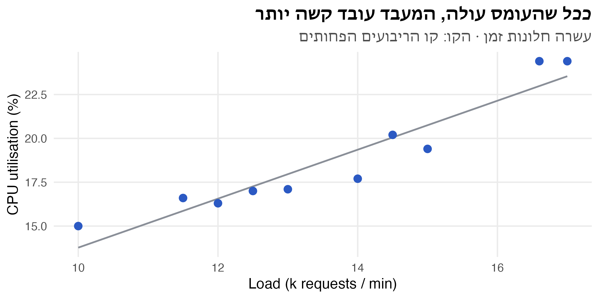
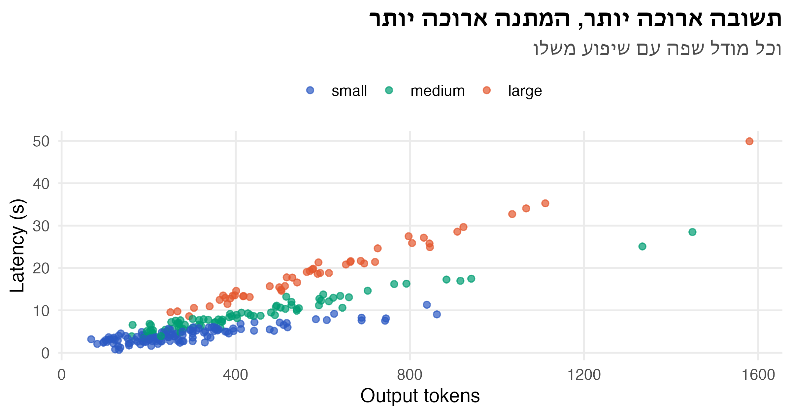
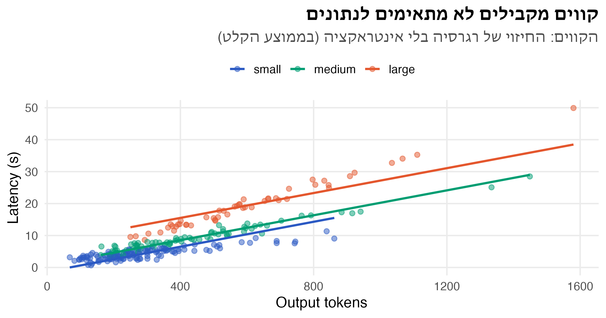
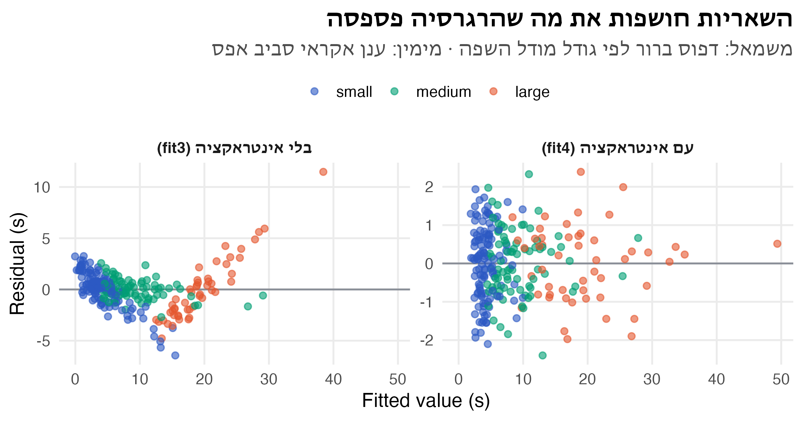
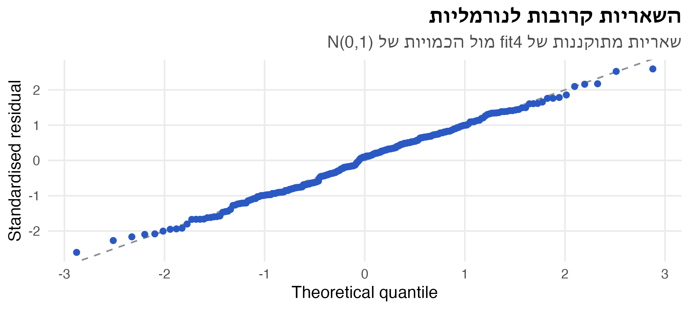
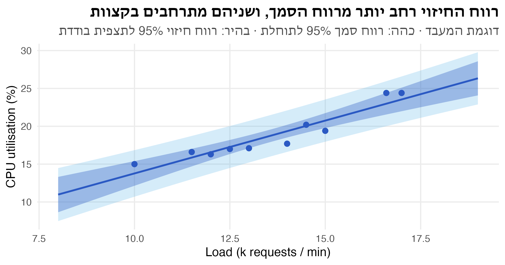

cpu = pd.DataFrame({
"load": [10, 11.5, 14.5, 12, 15, 16.6, 12.5, 13, 14, 17], # k requests / min
"util": [15, 16.6, 20.2, 16.3, 19.4, 24.4, 17, 17.1, 17.7, 24.4], # CPU %
})ניתוח נתונים סטטיסטי · הרצאה 3
2026-10-23
צוות התשתיות מתכנן קיבולת (capacity planning) לשירות חדש. בעשרה חלונות זמן נמדדו העומס (אלפי בקשות בדקה) וניצולת המעבד (CPU, באחוזים).
השאלות: בכמה עולה ניצולת המעבד עם כל אלף בקשות נוספות בדקה? והאם הקשר הזה “אמיתי”, או שהוא יכול להיות מקרי?
b1, b0 = np.polyfit(cpu.load, cpu.util, 1)
xs = np.linspace(cpu.load.min(), cpu.load.max(), 50)
fig, ax = plt.subplots(figsize=(8, 4))
ax.plot(xs, b0 + b1 * xs, color=nanas_pal["grey"], linewidth=0.8)
ax.scatter(cpu.load, cpu.util, s=40, color=nanas_pal["primary"])
ax.set_title("ככל שהעומס עולה, המעבד עובד קשה יותר\nעשרה חלונות זמן · הקו: קו הריבועים הפחותים", loc="right")
ax.set_xlabel("Load (k requests / min)"); ax.set_ylabel("CPU utilisation (%)")
plt.close(fig)
show_original("03/cpu-plot-1.png")
\[ Y_i = \beta_0 + \beta_1 x_i + \varepsilon_i \qquad i = 1, \dots, n \]
ההנחות על השגיאות \(\varepsilon_i\):
מחפשים את הקו שממזער את סכום ריבועי הסטיות האנכיות:
\[ L(\beta_0, \beta_1) = \sum_{i=1}^{n} \left(y_i - \beta_0 - \beta_1 x_i\right)^2 \]
גוזרים לפי \(\beta_0\) ולפי \(\beta_1\) ומשווים לאפס (משוואות נורמליות), ומקבלים:
\[ \hat\beta_1 = \frac{S_{xy}}{S_{xx}} \qquad \hat\beta_0 = \bar y - \hat\beta_1 \bar x \]
\[ S_{xx} = \sum_{i=1}^{n} (x_i - \bar x)^2 = \sum x_i^2 - n\bar x^2 \qquad S_{xy} = \sum_{i=1}^{n} (x_i - \bar x)(y_i - \bar y) = \sum x_i y_i - n \bar x \bar y \]
n 10.000
x_bar 13.610
y_bar 18.810
Sxx 44.989
Sxy 62.799
Syy 97.909
dtype: float64\[ \hat\beta_1 = \frac{62.80}{44.99} = 1.396 \qquad \hat\beta_0 = 18.81 - 1.396 \cdot 13.61 = -0.188 \]
\[ SS_R = \hat\beta_1 S_{xy} = 87.66 \qquad SS_E = S_{yy} - SS_R = 97.91 - 87.66 = 10.25 \qquad \hat\sigma^2 = \frac{SS_E}{n-2} = 1.281 \]
\[ se(\hat\beta_1) = \sqrt{\frac{\hat\sigma^2}{S_{xx}}} = \sqrt{\frac{1.281}{44.99}} = 0.169 \qquad t = \frac{1.396}{0.169} = 8.27 \qquad R^2 = \frac{SS_R}{S_{yy}} = 0.895 \]
OLS Regression Results
==============================================================================
Dep. Variable: util R-squared: 0.895
Model: OLS Adj. R-squared: 0.882
Method: Least Squares F-statistic: 68.42
Date: Fri, 23 Oct 2026 Prob (F-statistic): 3.43e-05
Time: 14:24:46 Log-Likelihood: -14.313
No. Observations: 10 AIC: 32.63
Df Residuals: 8 BIC: 33.23
Df Model: 1
Covariance Type: nonrobust
==============================================================================
coef std err t P>|t| [0.025 0.975]
------------------------------------------------------------------------------
Intercept -0.1879 2.324 -0.081 0.938 -5.548 5.172
load 1.3959 0.169 8.272 0.000 1.007 1.785
==============================================================================
Omnibus: 1.150 Durbin-Watson: 1.923
Prob(Omnibus): 0.563 Jarque-Bera (JB): 0.696
Skew: -0.186 Prob(JB): 0.706
Kurtosis: 1.762 Cond. No. 89.9
==============================================================================
Notes:
[1] Standard Errors assume that the covariance matrix of the errors is correctly specified.Estimate: המקדמים. כל אלף בקשות נוספות בדקה מעלות את ניצולת המעבד ב-1.4 נקודות אחוז בממוצעStd. Error: שגיאת התקן של כל מקדם, \(se(\hat\beta_j)\)t value ו-Pr(>|t|): מבחן \(H_0: \beta_j = 0\), עם \(t = \hat\beta_j / se(\hat\beta_j)\) ו-\(n - 2 = 8\) דרגות חופש. לשיפוע \(p = 0.00003\), ולכן דוחים: הקשר לא מקריResidual standard error: \(\hat\sigma = \sqrt{MS_E} = 1.13\). זו הסטייה הטיפוסית של תצפית מהקו, ביחידות של \(Y\)Multiple R-squared: 89.5% מהשונות בניצולת המעבד מוסברים על ידי העומסF-statistic: מבחן לכל המודל. ברגרסיה פשוטה \(F = t^2\): \(8.27^2 = 68.4\)החותך הוא הניצולת הצפויה כש-\(x = 0\), הרחק מטווח הנתונים (10 עד 17). לכן השונות שלו גדולה:
\[ V(\hat\beta_0) = \sigma^2 \left[\frac{1}{n} + \frac{\bar x^2}{S_{xx}}\right] \]
אם מחסירים מ-\(x\) את הממוצע שלו, \(\bar x = 0\), והחותך הופך ל-\(\bar y\): הניצולת הצפויה בעומס הממוצע.
| coef | std err | t | P>|t| | [0.025 | 0.975] | |
|---|---|---|---|---|---|---|
| Intercept | 18.8100 | 0.358 | 52.551 | 0.000 | 17.985 | 19.635 |
| load_c | 1.3959 | 0.169 | 8.272 | 0.000 | 1.007 | 1.785 |
\[ \underbrace{\sum_{i}(y_i - \bar y)^2}_{SS_T} = \underbrace{\sum_{i}(\hat y_i - \bar y)^2}_{SS_R} + \underbrace{\sum_{i}(y_i - \hat y_i)^2}_{SS_E} \]
| מקור | סכום ריבועים | דרגות חופש | ממוצע ריבועים | \(F\) |
|---|---|---|---|---|
| רגרסיה | \(SS_R\) | \(1\) | \(MS_R = SS_R / 1\) | \(MS_R / MS_E\) |
| שגיאה | \(SS_E\) | \(n - 2\) | \(MS_E = SS_E / (n-2)\) | |
| סך הכול | \(SS_T\) | \(n - 1\) |
| df | sum_sq | mean_sq | F | PR(>F) | |
|---|---|---|---|---|---|
| load | 1.0 | 87.6595 | 87.6595 | 68.4207 | 3.4310e-05 |
| Residual | 8.0 | 10.2495 | 1.2812 | NaN | NaN |
מקדם המתאם המרובה: \(R^2 = SS_R / SS_T = 87.66 / 97.91 = 0.895\)
שני הרכיבים אי-שליליים, ולכן תמיד \(0 \le R^2 \le 1\).
חברה משתמשת ב-API של מודל שפה, בשלושה גדלים: small, medium ו-large. המשתמשים מתלוננים על המתנה ארוכה.
השאלות:
הנתונים: 250 קריאות מהלוגים (נתונים מדומים). לכל קריאה: גודל מודל השפה, מספר הטוקנים בקלט ובפלט, מספר המסמכים שצורפו לפרומפט (RAG), השעה ביום, וזמן התגובה בשניות.
# Own RNG stream, so edits elsewhere in the lecture don't change this example.
# Note: numpy's RNG differs from R's, so exact simulated values differ from the
# R original, but the data-generating recipe (and so the statistical conclusions
# below) is identical.
rng = np.random.default_rng(303)
n_calls = 250
sizes = ["small", "medium", "large"]
median_output = {"small": 250, "medium": 350, "large": 500} # tokens
sec_per_token = {"small": 0.010, "medium": 0.018, "large": 0.030}
model = pd.Categorical(rng.choice(sizes, n_calls, p=[0.5, 0.3, 0.2]), categories=sizes)
rag_docs = rng.poisson(3, n_calls) # documents added to the prompt
input_tokens = np.round(300 + 550 * rag_docs + rng.lognormal(np.log(400), 0.6, n_calls))
output_tokens = np.round([rng.lognormal(np.log(median_output[m]), 0.5) for m in model])
hour = rng.integers(0, 24, n_calls)
llm = pd.DataFrame({
"model": model, "rag_docs": rag_docs, "input_tokens": input_tokens,
"output_tokens": output_tokens, "hour": hour,
})
sec_tok = llm.model.map(sec_per_token).astype(float)
llm["latency"] = np.round(0.8 + 0.25 * llm.input_tokens / 1000 +
sec_tok * llm.output_tokens + rng.normal(0, 1, n_calls), 2)
llm["input_k"] = llm.input_tokens / 1000
llm[["model", "input_tokens", "output_tokens", "rag_docs", "hour", "latency"]].head(4)| model | input_tokens | output_tokens | rag_docs | hour | latency | |
|---|---|---|---|---|---|---|
| 0 | small | 1931.0 | 189.0 | 2 | 23 | 2.78 |
| 1 | small | 3907.0 | 133.0 | 5 | 22 | 4.70 |
| 2 | large | 2758.0 | 553.0 | 4 | 11 | 17.73 |
| 3 | small | 2258.0 | 278.0 | 3 | 9 | 4.86 |
fig, ax = plt.subplots(figsize=(8, 4.2))
for m, color in model_cols.items():
sub = llm[llm.model == m]
ax.scatter(sub.output_tokens, sub.latency, alpha=0.7, color=color, label=m)
ax.set_title("תשובה ארוכה יותר, המתנה ארוכה יותר\nוכל מודל שפה עם שיפוע משלו", loc="right")
ax.set_xlabel("Output tokens"); ax.set_ylabel("Latency (s)")
ax.legend()
plt.close(fig)
show_original("03/llm-plot-1.png")
\[ Y_i = \beta_0 + \beta_1 x_{i1} + \beta_2 x_{i2} + \dots + \beta_k x_{ik} + \varepsilon_i \qquad \varepsilon_i \sim N(0, \sigma^2) \]
נתחיל משני משתנים מסבירים: הטוקנים בקלט (באלפים) והטוקנים בפלט.
\[ \mathbf{y} = X\boldsymbol\beta + \boldsymbol\varepsilon \qquad X = \begin{pmatrix} 1 & x_{11} & \cdots & x_{1k} \\ \vdots & \vdots & & \vdots \\ 1 & x_{n1} & \cdots & x_{nk} \end{pmatrix}_{n \times (k+1)} \]
ממזערים את \(L(\boldsymbol\beta) = (\mathbf{y} - X\boldsymbol\beta)'(\mathbf{y} - X\boldsymbol\beta)\). הנגזרת היא \(-2X'\mathbf{y} + 2X'X\boldsymbol\beta\), ומשווים אותה לאפס:
\[ X'X\hat{\boldsymbol\beta} = X'\mathbf{y} \quad\Longrightarrow\quad \hat{\boldsymbol\beta} = (X'X)^{-1}X'\mathbf{y} \]
\[ se(\hat\beta_j) = \sqrt{\hat\sigma^2 C_{jj}} \qquad t = \frac{\hat\beta_j}{se(\hat\beta_j)} \sim t_{n-k-1} \qquad \hat\beta_j \pm t_{1-\alpha/2,\, n-k-1} \cdot se(\hat\beta_j) \]
OLS Regression Results
==============================================================================
Dep. Variable: latency R-squared: 0.808
Model: OLS Adj. R-squared: 0.806
Method: Least Squares F-statistic: 518.9
Date: Fri, 23 Oct 2026 Prob (F-statistic): 3.58e-89
Time: 14:24:46 Log-Likelihood: -650.14
No. Observations: 250 AIC: 1306.
Df Residuals: 247 BIC: 1317.
Df Model: 2
Covariance Type: nonrobust
=================================================================================
coef std err t P>|t| [0.025 0.975]
---------------------------------------------------------------------------------
Intercept -2.4492 0.630 -3.890 0.000 -3.689 -1.209
input_k 0.2483 0.211 1.174 0.241 -0.168 0.665
output_tokens 0.0276 0.001 32.189 0.000 0.026 0.029
==============================================================================
Omnibus: 7.090 Durbin-Watson: 1.911
Prob(Omnibus): 0.029 Jarque-Bera (JB): 7.179
Skew: -0.326 Prob(JB): 0.0276
Kurtosis: 3.514 Cond. No. 1.37e+03
==============================================================================
Notes:
[1] Standard Errors assume that the covariance matrix of the errors is correctly specified.
[2] The condition number is large, 1.37e+03. This might indicate that there are
strong multicollinearity or other numerical problems.output_tokens = 0.0263: כל טוקן נוסף בתשובה מוסיף כ-26 מילישניות, כשמספר הטוקנים בקלט קבוע. \(t = 28\), מובהק מאודinput_k: לא מובהק (\(p = 0.75\)). האם הקלט באמת לא משפיע? נחזור לזהF-statistic: 396 on 2 and 247 DF: מבחן לכל המודל. \(k = 2\) ו-\(n - k - 1 = 247\)R-squared = 0.762: שני המשתנים יחד מסבירים 76% מהשונות בזמן התגובהResidual standard error = 3.56: קריאה טיפוסית רחוקה 3.6 שניות מהחיזוי. זה הרבה, כשהחציון הוא 6 שניות\[ H_0: \beta_1 = \beta_2 = \dots = \beta_k = 0 \qquad H_1: \text{לפחות מקדם אחד שונה מאפס} \]
| מקור | סכום ריבועים | דרגות חופש | ממוצע ריבועים | \(F\) |
|---|---|---|---|---|
| רגרסיה | \(SS_R\) | \(k\) | \(MS_R = SS_R / k\) | \(MS_R / MS_E\) |
| שגיאה | \(SS_E\) | \(n - k - 1\) | \(MS_E = SS_E / (n-k-1)\) | |
| סך הכול | \(SS_T\) | \(n - 1\) |
דוחים את \(H_0\) אם \(F > F_{1-\alpha;\, k,\, n-k-1}\).
\[ R^2 = \frac{SS_R}{SS_T} = 1 - \frac{SS_E}{SS_T} \qquad R^2_{adj} = 1 - \frac{SS_E / (n - k - 1)}{SS_T / (n - 1)} = 1 - (1 - R^2)\frac{n - 1}{n - k - 1} \]
rng_n = np.random.default_rng(8)
llm_noise = llm.assign(noise1=rng_n.standard_normal(len(llm)),
noise2=rng_n.standard_normal(len(llm)),
noise3=rng_n.standard_normal(len(llm)))
fit_noise = smf.ols("latency ~ input_k + output_tokens + noise1 + noise2 + noise3", data=llm_noise).fit()
pd.DataFrame({
"fit2": {"R2": fit2.rsquared, "adj": fit2.rsquared_adj},
"fit_noise": {"R2": fit_noise.rsquared, "adj": fit_noise.rsquared_adj},
}).T| R2 | adj | |
|---|---|---|
| fit2 | 0.8078 | 0.8062 |
| fit_noise | 0.8113 | 0.8075 |
פלט של רגרסיה עם \(n = 30\) תצפיות ו-\(k = 3\) משתנים מסבירים. חלק מהערכים נמחקו:
| מקור | סכום ריבועים | דרגות חופש | ממוצע ריבועים | \(F\) |
|---|---|---|---|---|
| רגרסיה | 600 | (א) | (ב) | (ג) |
| שגיאה | (ד) | (ה) | (ו) | |
| סך הכול | 860 | 29 |
השלימו את הטבלה, וחשבו את \(R^2\), את \(R^2_{adj}\) ואת \(\hat\sigma\). האם המודל מובהק ב-\(\alpha = 0.05\)? (\(F_{0.95;\,3,\,26} = 2.98\))
למשתנה קטגורי עם \(m\) רמות מוסיפים \(m - 1\) משתני דמה (אינדיקטורים). רמה אחת היא רמת הבסיס (reference level), ולה אין משתנה משלה.
\[ D_{medium} = \begin{cases} 1 & \text{medium} \\ 0 & \text{אחרת} \end{cases} \qquad D_{large} = \begin{cases} 1 & \text{large} \\ 0 & \text{אחרת} \end{cases} \]
\[ Y = \beta_0 + \beta_1 x_{input} + \beta_2 x_{output} + \beta_3 D_{medium} + \beta_4 D_{large} + \varepsilon \]
factor. רמת הבסיס היא הרמה הראשונה (levels)fit_raw = smf.ols("latency ~ model", data=llm).fit() # model only
fit3 = smf.ols("latency ~ input_k + output_tokens + model", data=llm).fit() # same length of answer
pd.DataFrame({
"raw": fit_raw.params[["model[T.medium]", "model[T.large]"]].to_numpy(),
"adjusted": fit3.params[["model[T.medium]", "model[T.large]"]].to_numpy(),
}, index=["modelmedium", "modellarge"])| raw | adjusted | |
|---|---|---|
| modelmedium | 3.8203 | 1.5585 |
| modellarge | 14.3363 | 7.6691 |
השאלה: האם גודל מודל השפה משפיע בכלל? זו השערה על שני מקדמים יחד, \(H_0: \beta_3 = \beta_4 = 0\). אי אפשר לענות עליה עם שני מבחני t נפרדים.
משווים בין המודל המלא (full) לבין המודל המצומצם (reduced), שבו \(H_0\) נכונה:
\[ F = \frac{(SS_E^{R} - SS_E^{F}) / q}{SS_E^{F} / (n - k - 1)} \sim F_{q,\; n-k-1} \]
\(q\) הוא מספר המקדמים שנבדקים, ו-\(k\) הוא מספר המשתנים במודל המלא.
RSS: סכום ריבועי השגיאות (\(SS_E\)) של כל מודל. משתני הדמה הורידו אותו מ-2656 ל-1025Df = 2: הוספנו \(q = 2\) מקדמים\[ F = \frac{(2656 - 1025) / 2}{1025 / 245} = 195 \]
ברגרסיה fit3 לכל מודל שפה יש חותך משלו, אבל אותו שיפוע: אותו זמן לכל טוקן בתשובה. זה סביר?
aug3 = llm.assign(fitted=fit3.fittedvalues)
fig, ax = plt.subplots(figsize=(8, 4.2))
for m, color in model_cols.items():
sub = aug3[aug3.model == m]
ax.scatter(sub.output_tokens, sub.latency, alpha=0.5, color=color)
b1, b0 = np.polyfit(sub.output_tokens, sub.fitted, 1)
xs = np.linspace(sub.output_tokens.min(), sub.output_tokens.max(), 30)
ax.plot(xs, b0 + b1 * xs, color=color, linewidth=1, label=m)
ax.set_title("קווים מקבילים לא מתאימים לנתונים\nהקווים: החיזוי של רגרסיה בלי אינטראקציה (בממוצע הקלט)", loc="right")
ax.set_xlabel("Output tokens"); ax.set_ylabel("Latency (s)")
ax.legend()
plt.close(fig)
show_original("03/parallel-lines-1.png")
אינטראקציה פירושה שההשפעה של משתנה אחד תלויה בערך של משתנה אחר. כאן: הזמן לכל טוקן תלוי בגודל מודל השפה.
\[ Y = \beta_0 + \beta_1 x_{in} + \beta_2 x_{out} + \beta_3 D_{med} + \beta_4 D_{lrg} + \beta_5\, x_{out} D_{med} + \beta_6\, x_{out} D_{lrg} + \varepsilon \]
| מודל שפה | השיפוע של \(x_{out}\) |
|---|---|
| small | \(\beta_2\) |
| medium | \(\beta_2 + \beta_5\) |
| large | \(\beta_2 + \beta_6\) |
ב-R, output_tokens * model הוא קיצור של output_tokens + model + output_tokens:model.
OLS Regression Results
==============================================================================
Dep. Variable: latency R-squared: 0.981
Model: OLS Adj. R-squared: 0.981
Method: Least Squares F-statistic: 2141.
Date: Fri, 23 Oct 2026 Prob (F-statistic): 3.23e-207
Time: 14:24:46 Log-Likelihood: -357.96
No. Observations: 250 AIC: 729.9
Df Residuals: 243 BIC: 754.6
Df Model: 6
Covariance Type: nonrobust
=================================================================================================
coef std err t P>|t| [0.025 0.975]
-------------------------------------------------------------------------------------------------
Intercept 0.9205 0.262 3.516 0.001 0.405 1.436
model[T.medium] 0.2355 0.323 0.730 0.466 -0.400 0.871
model[T.large] 0.0478 0.349 0.137 0.891 -0.640 0.735
input_k 0.2404 0.066 3.623 0.000 0.110 0.371
output_tokens 0.0100 0.001 15.035 0.000 0.009 0.011
output_tokens:model[T.medium] 0.0068 0.001 7.687 0.000 0.005 0.009
output_tokens:model[T.large] 0.0196 0.001 24.833 0.000 0.018 0.021
==============================================================================
Omnibus: 1.522 Durbin-Watson: 2.071
Prob(Omnibus): 0.467 Jarque-Bera (JB): 1.254
Skew: -0.161 Prob(JB): 0.534
Kurtosis: 3.131 Cond. No. 3.32e+03
==============================================================================
Notes:
[1] Standard Errors assume that the covariance matrix of the errors is correctly specified.
[2] The condition number is large, 3.32e+03. This might indicate that there are
strong multicollinearity or other numerical problems.input_k מובהק עכשיו: np.float64(0.24) שניות לכל אלף טוקנים בקלט. במודלים הקודמים הוא “הוסתר” בגלל שגיאה גדולה (\(\hat\sigma = 3.6\)). עכשיו \(\hat\sigma = np.float64(1.03)\)modelmedium, modellarge לא מובהקים, אבל לא מוחקים אותם. כשיש אינטראקציה, הם ההפרש בין מודלי השפה כשאורך התשובה אפס, ולא “ההשפעה של גודל מודל השפה”fig, axes = plt.subplots(1, 2, figsize=(10, 4.2))
for ax, fit, title in [(axes[0], fit3, "בלי אינטראקציה (fit3)"), (axes[1], fit4, "עם אינטראקציה (fit4)")]:
ax.axhline(0, color=nanas_pal["grey"])
for m, color in model_cols.items():
mask = (llm.model == m).to_numpy()
ax.scatter(fit.fittedvalues[mask], fit.resid[mask], alpha=0.6, color=color, label=m)
ax.set_title(title)
ax.set_xlabel("Fitted value (s)")
axes[0].set_ylabel("Residual (s)")
axes[1].legend()
fig.suptitle("השאריות חושפות את מה שהרגרסיה פספסה\nמשמאל: דפוס ברור לפי גודל מודל השפה · מימין: ענן אקראי סביב אפס")
plt.close(fig)
show_original("03/resid-plot-1.png")
| מה רואים | מה זה אומר | מה עושים |
|---|---|---|
| ענן אקראי סביב אפס | ההנחות סבירות | |
| עקומה (קשת) | הקשר לא לינארי | מוסיפים \(x^2\), טרנספורמציה ל-\(x\) |
| משפך: הפיזור גדל עם \(\hat y\) | השונות לא קבועה | טרנספורמציה ל-\(Y\) (למשל \(\log Y\)) |
| קבוצות עם דפוסים שונים | חסר משתנה או אינטראקציה | מוסיפים אותם למודל |
| נקודה בודדת רחוקה | ערך חריג | בודקים אותו. לא מוחקים אוטומטית |
ועוד שתי בדיקות:
stat_qq()). עם מדגם גדול, סטיות קטנות לא מזיקות למבחניםstd_resid = fit4.get_influence().resid_studentized_internal
fig, ax = plt.subplots(figsize=(8, 3.6))
sm.qqplot(std_resid, line="45", ax=ax, color=nanas_pal["primary"])
ax.set_title("השאריות קרובות לנורמליות\nשאריות מתוקננות של fit4 מול הכמויות של N(0,1)", loc="right")
ax.set_xlabel("Theoretical quantile"); ax.set_ylabel("Standardised residual")
plt.close(fig)
show_original("03/qq-plot-1.png")
גרף Q-Q הוא בדיקה בעין. אפשר גם לבדוק את הנורמליות במבחן, עם מבחן KS מההרצאה על שיטות א-פרמטריות:
\[ H_0: \text{השאריות המתוקננות מתפלגות } N(0, 1) \qquad D = \max_x \left| F_n(x) - \Phi(x) \right| \]
D = 0.0284173, p-value = 0.984258shapiro.test()מספר המסמכים מ-RAG קובע כמעט לגמרי את מספר הטוקנים בקלט: המתאם ביניהם הוא np.float64(0.96). מה קורה כשמכניסים את שניהם?
| Estimate | Std. Error | |
|---|---|---|
| fit4 | 0.2404 | 0.0663 |
| fit5 | 0.0667 | 0.2504 |
input_k גדלה פי np.float64(3.8). הרגרסיה לא יכולה להפריד בין שני משתנים שזזים יחדמדד VIF (Variance Inflation Factor): \(R_j^2\) הוא ה-\(R^2\) של רגרסיה של \(x_j\) על כל שאר המשתנים המסבירים.
\[ VIF_j = \frac{1}{1 - R_j^2} \]
קריטריונים נפוצים: \(R^2_{adj}\), ה-p-value של מבחן F חלקי, או AIC (מדד שמאזן בין טיב ההתאמה למספר הפרמטרים. קטן יותר = טוב יותר)
# statsmodels has no built-in step(); a small bidirectional-by-AIC search, like R's step().
def stepwise_aic(data, response, all_terms, start_terms):
def fit_of(terms):
rhs = " + ".join(terms) if terms else "1"
return smf.ols(f"{response} ~ {rhs}", data=data).fit()
current = list(start_terms)
current_aic = fit_of(current).aic
improved = True
while improved:
improved = False
candidates = []
for t in all_terms:
if t not in current:
candidates.append(("add", t, current + [t]))
for t in current:
candidates.append(("drop", t, [x for x in current if x != t]))
best = None
for action, term, terms in candidates:
aic = fit_of(terms).aic
if best is None or aic < best[0]:
best = (aic, action, term, terms)
if best is not None and best[0] < current_aic:
current_aic, _, _, current = best
improved = True
return fit_of(current), current
all_terms = ["input_k", "rag_docs", "hour", "output_tokens", "C(model)", "output_tokens:C(model)"]
fit_step, step_terms = stepwise_aic(llm, "latency", all_terms, all_terms)
"latency ~ " + " + ".join(step_terms)'latency ~ rag_docs + output_tokens + output_tokens:C(model)'[['', 'coef', 'std err', 't', 'P>|t|', '[0.025', '0.975]'],
['Intercept',
' 1.1660',
' 0.178',
' 6.536',
' 0.000',
' 0.815',
' 1.517'],
['rag_docs',
' 0.1420',
' 0.039',
' 3.656',
' 0.000',
' 0.065',
' 0.218'],
['output_tokens',
' 0.0097',
' 0.001',
' 19.487',
' 0.000',
' 0.009',
' 0.011'],
['output_tokens:C(model)[T.medium]',
' 0.0074',
' 0.000',
' 17.360',
' 0.000',
' 0.007',
' 0.008'],
['output_tokens:C(model)[T.large]',
' 0.0198',
' 0.000',
' 45.707',
' 0.000',
' 0.019',
' 0.021']]hour נשאר במודל, אף שבסימולציה לשעה אין שום השפעה על זמן התגובה. ה-p-value שלו אפילו קרוב ל-0.05לנקודה חדשה \(\mathbf{x}_0 = (1, x_{01}, \dots, x_{0k})'\), החיזוי הוא \(\hat y_0 = \mathbf{x}_0'\hat{\boldsymbol\beta}\). יש שתי שאלות שונות:
\[ \text{CI:}\;\; \hat y_0 \pm t_{1-\alpha/2,\, n-k-1}\sqrt{\hat\sigma^2\, \mathbf{x}_0'(X'X)^{-1}\mathbf{x}_0} \qquad \text{PI:}\;\; \hat y_0 \pm t_{1-\alpha/2,\, n-k-1}\sqrt{\hat\sigma^2 \left(1 + \mathbf{x}_0'(X'X)^{-1}\mathbf{x}_0\right)} \]
ה-1 הנוסף ברווח החיזוי הוא השונות של התצפית החדשה עצמה. גם עם אינסוף נתונים הוא לא נעלם.
ברגרסיה פשוטה, \(\mathbf{x}_0'(X'X)^{-1}\mathbf{x}_0 = \dfrac{1}{n} + \dfrac{(x_0 - \bar x)^2}{S_{xx}}\): הרווחים צרים ביותר ב-\(\bar x\) ומתרחבים ככל שמתרחקים ממנו.
2,000 טוקנים בקלט, 500 בפלט, מודל השפה הגדול:
new_call = pd.DataFrame({"input_k": [2], "output_tokens": [500],
"model": pd.Categorical(["large"], categories=["small", "medium", "large"])})
pred = fit4.get_prediction(new_call)
conf = pred.conf_int(alpha=0.05)[0] # CI for the mean
pi = pred.conf_int(alpha=0.05, obs=True)[0] # PI for a single new observation
pd.DataFrame({"fit": [pred.predicted_mean[0]] * 2, "lwr": [conf[0], pi[0]], "upr": [conf[1], pi[1]]},
index=["confidence", "prediction"])| fit | lwr | upr | |
|---|---|---|---|
| confidence | 16.2605 | 15.9566 | 16.5644 |
| prediction | 16.2605 | 14.2139 | 18.3070 |
grid_cpu = pd.DataFrame({"load": np.arange(8, 19.01, 0.1)})
pred_cpu = fit_cpu.get_prediction(grid_cpu)
ci = pred_cpu.conf_int(alpha=0.05)
pi = pred_cpu.conf_int(alpha=0.05, obs=True)
fig, ax = plt.subplots(figsize=(8, 4.2))
ax.fill_between(grid_cpu.load, pi[:, 0], pi[:, 1], color=nanas_pal["sky"], alpha=0.25)
ax.fill_between(grid_cpu.load, ci[:, 0], ci[:, 1], color=nanas_pal["primary"], alpha=0.35)
ax.plot(grid_cpu.load, pred_cpu.predicted_mean, color=nanas_pal["primary"], linewidth=1)
ax.scatter(cpu.load, cpu.util, s=25)
ax.set_title("רווח החיזוי רחב יותר מרווח הסמך, ושניהם מתרחבים בקצוות\nדוגמת המעבד · כהה: רווח סמך 95% לתוחלת · בהיר: רווח חיזוי 95% לתצפית בודדת", loc="right")
ax.set_xlabel("Load (k requests / min)"); ax.set_ylabel("CPU utilisation (%)")
plt.close(fig)
show_original("03/ci-pi-plot-1.png")
input_k נראה חסר השפעה עד שהוספנו את גודל מודל השפה והאינטראקציה. תמיד מסתכלים על השאריות| השאלה | הכלי | ב-R |
|---|---|---|
| מה הקשר בין \(Y\) לכל משתנה, כשהשאר קבועים? | \(\hat{\boldsymbol\beta} = (X'X)^{-1}X'\mathbf{y}\) | lm(y ~ x1 + x2), summary() |
| האם משתנה בודד תורם? | מבחן t, \(t_{n-k-1}\) | summary() |
| האם המודל כולו מסביר משהו? | מבחן F, \(F_{k,\,n-k-1}\) | שורה אחרונה ב-summary() |
| האם קבוצת משתנים תורמת? | מבחן F חלקי, \(F_{q,\,n-k-1}\) | anova(reduced, full) |
| משתנה קטגורי עם \(m\) רמות | \(m - 1\) משתני דמה | factor |
| האם השיפוע תלוי בקבוצה? | אינטראקציה | x * group |
| האם ההנחות מתקיימות? | שאריות, Q-Q, VIF | augment(), stat_qq() |
| מה צפוי לתצפית חדשה? | רווח סמך / חיזוי | predict(interval = ) |
ניתוח נתונים סטטיסטי · תשפ״ז